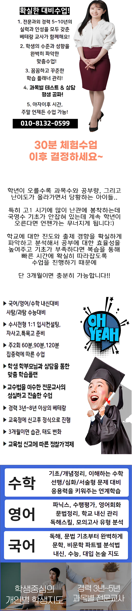

첫째로, 산곡동 초등학생 영어과외의 교육 철학이 아이의 성장 단계와 잘 맞는지 살펴보면 학습 동기 부여에 큰 도움이 되고, 장기적인 목표 설정에도 긍정적인 영향을 줄 수 있어요. 다음으로, 강사진의 경력과 전공 분야가 실제 수업에 어떻게 적용되는지 확인해보면 강사의 전문성이 학습 효율을 높이는 핵심 요소임을 알 수 있어요. 또한, 수업 시간표와 휴식 시간 배분이 집중력을 유지하는 데 도움이 되는지 검토해봐요. 적절한 휴식은 뇌의 정보를 정리하고 다음 학습을 준비하게 해줘요. 특히, 산곡동 초등학생 영어과외에서 제공하는 학습 성과 보고서가 정기적으로 전달되는지 확인하면 부모가 자녀의 성장 과정을 구체적으로 파악하고, 필요한 지원을 적시에 제공할 수 있거든요. 마지막으로, 주변 학부모들의 실제 이용 후기가 신뢰성을 판단하는 기준이 될 수 있으며, 긍정적인 경험이 많은 산곡동 초등학생 영어과외을 선택하면 만족도와 재등록률이 높아지는 경향이 보여요.
학년이 올라갈수록 서술형 평가 비중이 늘어나는데, 아이들이 자주 하는 실수가 답을 지나치게 일반화해서 쓰는 거예요. 구체적인 근거 없이 항상 모두 같은 표현을 남발하면 감점이 될 수 있어요. 영어 시간에 수량을 나타내는 표현을 쓸 때도 상황에 따라 구분하지 못하고 헷갈려하는 경우가 많답니다. 산곡동의 산곡동 초등학생 영어과외가에서는 학년별로 이러한 취약점을 잡아주는 프로그램을 운영하는 곳이 많아요. 초등 저학년 때는 반복 학습을 통해 기본을 다지고, 고학년은 자기 주도 학습 시간을 확보하는 게 중요해요. 중고등부는 단원별로 정리를 얼마나 깔끔하게 하느냐가 성적을 가르는 기준이 되죠.
산곡동 초등학생 영어과외는 학습 포인트별 진도 흐름을 점검하면서 개념 이해를 중시해요. 주요 대상은 초등과 중등 학생이며, 커리큘럼은 단계별 복습을 차등 구성해요. 수강료는 초등 180,000원, 중등 200,000원이며, 사후 점검까지 진행해요. 타 산곡동 초등학생 영어과외에서 수업 후 방치되는 경우가 많은데, 우리는 지속적인 피드백으로 학습 정착을 돕아요.
| 과외명 | 와와학습코칭과외 |
| 수강료 | 초등 180,000원 | 중등 200,000원 |
CURRICULUM
산곡동 초등학생 영어과외은 중간고사와 기말고사를 대비해 주차별 학습 목표를 명확히 설정해요. 매주 수업 전에는 전주 학습 내용 복습 시간을 배정해 기억을 강화해요. 시험 직전에는 핵심 포인트와 오답 노트를 집중 리뷰해 실전 감각을 높여요. 학습 태도와 참여도도 함께 기록해 부모와 교사에게 공유해요. 이러한 체계적 접근은 단순 시험 점수 통보를 넘어 학습 습관 형성까지 도와줘요. 학습 계획은 주간 피드백을 바탕으로 유연하게 조정돼 학생의 현재 상태에 맞춰 최적화돼요.
산곡동 초등학생 영어과외 선택 단계에서 교재 비교 분석이 부족하면 적합한 프로그램을 놓치기 쉬워요. 등록 후에는 목표 설정이 명확하지 않아 학습 동기가 떨어지는 경우가 많거든요. 학습 관리 단계에서는 복습 일정이 흐트러져 성적 향상이 지연되는 상황이 발생합니다. 이런 오류를 사전에 인식하고 체계적인 플랜을 세우면 효과적인 공부 습관을 만들 수 있어요.
산곡동 초등학생 영어과외의 학습 전략은 학생 스스로 의사결정을 할 수 있는 수업 구조를 도입해요. 매 수업 시작에는 흥미를 유발하는 퀘스트형 문제를 제시하고, 학습 목표를 명확히 설정한 뒤 진행해요. 주 2회 100분 수업은 중간 테스트를 포함해 이해도를 즉시 확인하고, 오답 선택 이유를 주관적 느낌인지 논리적 근거인지 구분하도록 지도해요. 이러한 과정은 학습 동기를 지속시키고, 사고의 깊이를 확장하는 데 큰 도움이 돼요.
중학교 일 학년인데 교과서 내용은 꼼꼼히 읽지만 정작 발표할 때는 머뭇거리는 아이에게 딱 맞아요. 또 시험 일정이 바로 코앞인데도 계획을 자꾸 바꿔서 결국엔 아무것도 못 하고 끝나는 스타일이죠. 이런 아이들은 구체적인 목표 설정과 실행하는 방법을 알려주면 정말 잘해요. 학습 방향이 잡히면 집중력도 좋아지고 자신감도 생기거든요. 특히 자기주도적으로 공부하는 힘을 길러주고 싶다면 이곳을 추천해요. 아이 스스로 변화하는 모습을 보면 정말 뿌듯해질 거예요.
수업을 시작한 지 몇 달이 지나면서 눈에 띄는 성과가 생겼어요. 매주 목표를 설정하고 달성했을 때의 뿌듯함이 학습 동기를 크게 높여 주었어요. 장기적으로 꾸준히 참여하면서 충실함이 확신으로 바뀌는 걸 느꼈어요. 정기적인 상담을 통해 학습 방향을 점검받으니 관리가 지속적으로 이어지는 느낌이 들었어요. 수업 중에 선생님이 자연스럽게 참여를 이끌어 주어 스스로 답을 찾아가는 과정이 즐거웠어요. 전체적인 학습 경험이 긍정적으로 변하면서 학교 생활에서도 활발히 참여하게 된 점이 큰 변화였어요.